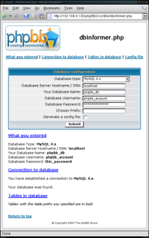
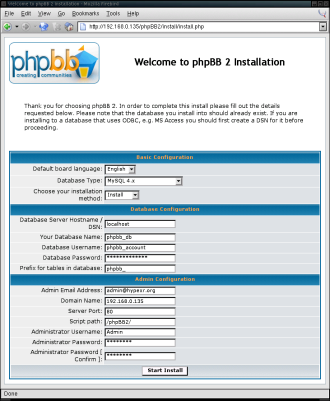

Setting up a Linux Server for phpBB :: phpBB tutorial
Brief Tutorial on Apache, PHP, and MySQL Installation and Configuration
Introduction
If you do not already know, phpBB is a php based message board that is open source. www.phpbb.com
This document, in addition to covering phpBB, briefly covers the installation and configuration of Apache, PHP, and MySQL, which are necessary to get up and running with phpBB. Note that phpBB works with many more system configurations than are mentioned here. It can be used with MySQL 3 and 4, PostgreSQL 7.x, and MS SQL 7/2000 and a web server that supports PHP.
Software Used
- Apache 2.0.48
- PHP 4.3.4
- MySQL 4.0.16
- phpBB 2.0.6
Document Conventions
This document will follow the following conventions:
- Grey boxes will contain commands to be entered or lines to be inserted into a file.
- In examples when a command is entered at a command prompt it will be preceded by a '$'.
- When "PATH_TO_<file_or_directory_name>" is used it means that I can not know the location where this file or directory resides on your system. "PATH_TO_<file_or_directory_name>" is symbolic of the directory structure leading to that file or directory.
- Command/Code snippets and all other information that is being used from a source other than me will be appropriately documented as such.
Apache, PHP, MySql Installation and Initial Setup
Apache
If you are installing from source see the Apache Compiling and Installing document. Their Overview for the impatient is as follows:
Download $ lynx http://httpd.apache.org/download.cgi
Extract $ gzip -d httpd-2_0_NN.tar.gz
$ tar xvf httpd-2_0_NN.tar
Configure $ ./configure --prefix=PREFIX --enable-so
Compile $ make
Install $ make install
Customize $ vi PREFIX/conf/httpd.conf
Test $ PREFIX/bin/apachectl start
NN must be replaced with the current minor version number, and PREFIX must be replaced with the filesystem path under which the server should be installed. If PREFIX is not specified, it defaults to /usr/local/apache2.
note: --enable-so is not part of Apache's documentation
|
IMPORTANT: you must add the --enable-so to get PHP working as a module later.
Security Note: If the only services you are going to be providing are http access and phpBB then you can use a firewall to close all ports except for port 80.
MySQL
If you are installing MySQL from binary, source, or RPM you can obtain a copy from www.mysql.com/downloads/. See www.mysql.com/documentation/mysql/bychapter/manual_Installing.html for all of the installation instructions. For the extremely daring and trusting, here is a summary for a binary installation (From MySQL's installation page):
The basic commands you must execute to install and use a MySQL binary distribution are:
shell> groupadd mysql
shell> useradd -g mysql mysql
shell> cd /usr/local
shell> gunzip < /path/to/mysql-VERSION-OS.tar.gz | tar xvf -
shell> ln -s full-path-to-mysql-VERSION-OS mysql
shell> cd mysql
shell> scripts/mysql_install_db
shell> chown -R root .
shell> chown -R mysql data
shell> chgrp -R mysql .
shell> bin/mysqld_safe --user=mysql &
If your version of MySQL is older than 4.0, substitute bin/safe_mysqld for bin/mysqld_safe in the final command.
|
If you want to install from source see www.mysql.com/documentation/mysql/bychapter/manual_Installing.html#Installing_source. No pasted summary here, its best to read what the MySQL team's documentation because there are system criteria you must meet and CFLAG settings that should be used.
Also, get the my-medium.cnf file from the MySQL documentation and replace my.cnf with this new file. (I find that the medium config gives decent performance, the large config eats up too much resources, and the little one is just weak)
PHP
You can download PHP from www.html.net/manual/en/install.unix.html. It is important to click on the "/downloads.html" and select one of the 4.3 source files. Do not attempt to install the "latest stable development version." The latest build may have problems during the make. PHP's source installation instructions are www.html.net/manual/en/install.apache2.html. You may also want to refer to dan.drydog.com/apache2php.html for information on getting it compiled and installed correctly. The most important thing is when running ./configure that you include the --with-apxs2=/"PATH_TO_apxs"/apxs and the --with-mysql which you may set equal to your MySQL directory. Do something similar to this:
$ cd /"PATH_TO_downloaded_php"/
$ tar zxvf php4-"version".tax.gz
$ cd php4-"numbers"/
$ ./configure \
--with-apxs2=/"PATH_TO_apxs"/apxs \
--with-mysql=/"PATH_TO_mysql"
$ make
$ make install
$ cp -p .libs/libphp4.so /"PATH_TO_apache"/modules
$ cp -p php.ini-recommended /"PATH_TO_prefix_to_php"/php.ini
NOTE: if you did not give a --prefix= option to ./configure
the last line will be:
$ cp -p php.ini-recommended /usr/local/lib/php.ini
|
NOTE: to find where apxs resides (or any other file that an explicit path is not given to in this document) run "find / -name 'apxs' -print".
Configuration and Testing
Now, Apache needs to be told about PHP. If httpd is running stop it:
NOTE: You can check if the httpd process is running by typing: "ps aux | grep httpd". If a process other than grep is listed you need to stop the httpd daemon.
NOTE: If you installed from source this will be /"PATH_TO_apache"/bin/apachectl start.
NOTE: If not, it may be in a different location and may be called apache2.
Open your .httpd.conf file (location varies depending on installation method). Customize the variables in this file to suit your needs and add:
#Add where the other LoadModule lines are
#Make sure this line exist only once
LoadModule php4_module /"PATH_TO_apache"/modules/libphp4.so
#Find DirectoryIndex and add index.html
DirectoryIndex index.html index.html
AddType application/x-httpd-php .html .php4
AddType application/x-httpd-php-source .phps
|
Open up /"PATH_TO_php.ini"/php.ini and add or uncomment:
Also have "safe_mode = off" in your php.ini file. The only reason to have it set to on is in a shared hosting environment.
Restart Apache:
|
$ /etc/init.d/httpd start
|
Test Apache and PHP
If Apache starts without any errors point your browser to "http://localhost" and see if the Apache test page loads. To test php create a file called test.html in your http root directory containing the following:
<HTML>
<HEAD>
<TITLE>PHP Test Page</TITLE>
</HEAD>
<BODY>
<?php phpinfo(); ?>
</BODY>
</HTML>
|
Security Note: Also, delete all of the files that Apache put by default in your html directory (In the past example files have been used as exploits. This is an easy precaution to take).
When pointing your browser to "http://localhost/test.html" you should see information about your php installation.
Final Configuration of MySQL
Make sure that the MySQL daemon is running, if not:
|
$ /etc/init.d/mysql start
|
If you installed MySQL via the binary or source install you will start it by:
$ cd /"PATH_TO_mysql"/
$ ./bin/mysqld_safe --user=mysql &
|
If you have not already done so, use mysqladmin to create an account for root so root can access MySQL
|
$ mysqladmin -u root password 'password_you_want'
|
Preliminary phpBB Installation Steps
Obtaining phpBB
phpBB can be obtained from www.phpbb.com/downloads.html
Installing phpBB
The initial installation of phpBB is as simple as extracting the archive and copying the PHPBB2 directory you HTML directory.
$ tar zxf phpBB-2.x.x.tar.gz
$ mv ./phpBB2 /"PATH_TO_html_files"/
|
MySQL Database Setup
For a less hands on method (not entering the mysql commands by hand) use phpMyAdmin. Take a look at the demo on their site for an example.
If using phpMyAdmin create a file called .htaccess in the phpMyAdmin install directory and add these lines:
IndexIgnore *
order deny,allow
deny from all
allow from 127.0.0.1
|
This makes it so that phpMyAdmin can only be accessed from the localhost.
If not using phpMyAdmin follow these steps.
MySQL Basics
First some very basics tips for using MySQL.
To enter into the mysql prompt type:
You will then be prompted for the password that you set earlier using mysqladmin.
Now you should see a prompt like "mysql> ".
As stated in MySQL Basics -- A MySQL Tutorial: "MySQL has good security controls, but the default installation is wide open. So, if you're doing a new installation, let's close things up before we go any further. Of course, change NewRootName and NewPassword, below, to something unique."
mysql> use mysql;
Database changed
mysql> delete from user where Host='%';
mysql> delete from user where User='';
mysql> delete from db where Host='%';
mysql> update user set User='NewRootName',
-> Password=password('NewPassword') where User='root';
mysql> flush privileges;
NOTE: The use mysql; command is not part of the cited example.
|
NOTE: use mysql; is not part of the cited example, but it is the databases that needs to be loaded in order to execute these commands.
NOTE: From this point on when starting the MySQL monitor you will need to use the "NewRootName" and "NewPassword" that you entered above. Example: "mysql -u my_new_root_name -p".
To see what databases exist use the SHOW DATABASES command:
mysql> show databases;
+----------+
| Database |
+----------+
| mysql |
| test |
+----------+
2 rows in set (0.00 sec)
|
To make changes to a database you will want to use the command USE "database name":
mysql> use mysql;
Database changed
|
From here you can show the tables in the database, modify stuff, and a whole lot of other stuff. See MySQL Basics -- A MySQL Tutorial for more basic information and the MySQL Documentation for detailed information. Here is an example to view the tables in the database:
mysql> show tables;
+-----------------+
| Tables_in_mysql |
+-----------------+
| columns_priv |
| db |
| func |
| host |
| tables_priv |
| user |
+-----------------+
6 rows in set (0.00 sec)
|
Creating the Database
Back to the necessary steps to getting rolling with phpBB. In MySQL we need to create a new database for phpBB to use. This is done using the CREATE DATABASE command. http://www.mysql.com/doc/en/CREATE_DATABASE.html
mysql> create database phpbb_db;
Query OK, 1 row affected (0.01 sec)
|
Granting Access to the Database
We now have a database called phpbb_db that will hold the information for phpBB. Next we grant the permissions for the database so that phpBB can access it. http://www.mysql.com/doc/en/Adding_users.html
mysql> use phpbb_db;
Database changed
mysql> GRANT ALL PRIVILEGES ON phpbb_db.* to phpbb_account@localhost
-> IDENTIFIED BY 'this_password';
Query OK, 0 rows affected (0.01 sec)
|
Now the phpbb_account has full access to our phpbb_db database. You can now type quit.
Setting up phpBB
Using dbinformer.html
In the phpBB2 directory there is a folder called contrib. It "contains a couple extra add-ons for phpBB 2.0.x." One of these extras is dbinformer. Point your web browser to "http://localhost/phpBB2/contrib/dbinformer.html". We can use it to ensure that phpBB will we able to use the database that we have created.

(click on image for a full sized view)
|
Because it was able to find and establish a connection to the database we are in the green to proceed.
phpBB Installation
Point your browser to "http://localhost/phpBB2/" and it should take you to the phpBB 2 installation page, "http://localhost/phpBB2/install/install.html" Fill in the fields similar to as shown in the screen shot.

(click on image for a full sized view)
|
Note: Its better to put your domain name (www.something.com) under "Domain Name:" rather than a local ip address (as is show in the screenshot). This will be used when it sends out e-mails that contain links back to your message board and can be changed at a later time by going to the "Administration Panel".
It may now inform you that the config is un-writable. Select "Just send the file to me and I'll FTP it manually" and click on "Download Config". Once downloaded copy it to your phpBB2 directory.
|
mv config.html /"PATH_TO_html_files"/phpBB2/
|
For security reasons you must delete "phpBB2/install" and "phpBB2/contrib". In the phpBB2 directory type
This completes the installation for the most part. Reload "http://localhost/phpBB2/" and you should be confronted with the message board. Once you log in there will be an "Go to Administration Panel" link at the bottom of the page. Click there and configure your new shiny phpBB!
Changing the Installation Information (Host, User Name, Password)
If your database's host name, database name, user name, or user password change after you delete the installation files you are able to modify them by editing config.html, which is found in the root of the install directory. You can also change the domain name that you had entered, during the install, by going into the "Administration Panel" -> "General Admin" -> "Configuration" and you will see "Domain Name" listed as the first field.
Links
- Apache HTTP Server Project
- Apache: Compiling and Installing
- MySQL Manual Installation
- MySQL Granting User Permissions
- MySQL Basics -- A MySQL Tutorial
- Joey Olson's mySQL Setup Guide
- PHP Project Home
- PHP 4 Apache 2 installation
- Dan Anderson's Apache 2 and PHP (mod_php) on Linux
- phpBB Home
- phpBB's Knowledge Base
- phpBB Support
- phpMyAdmin
Contributions
Thanks to Darth Wong, from the phpbb forums, for his tips on security and phpMyAdmin.
Top of Page
|
{kind=link}
{kind=link}